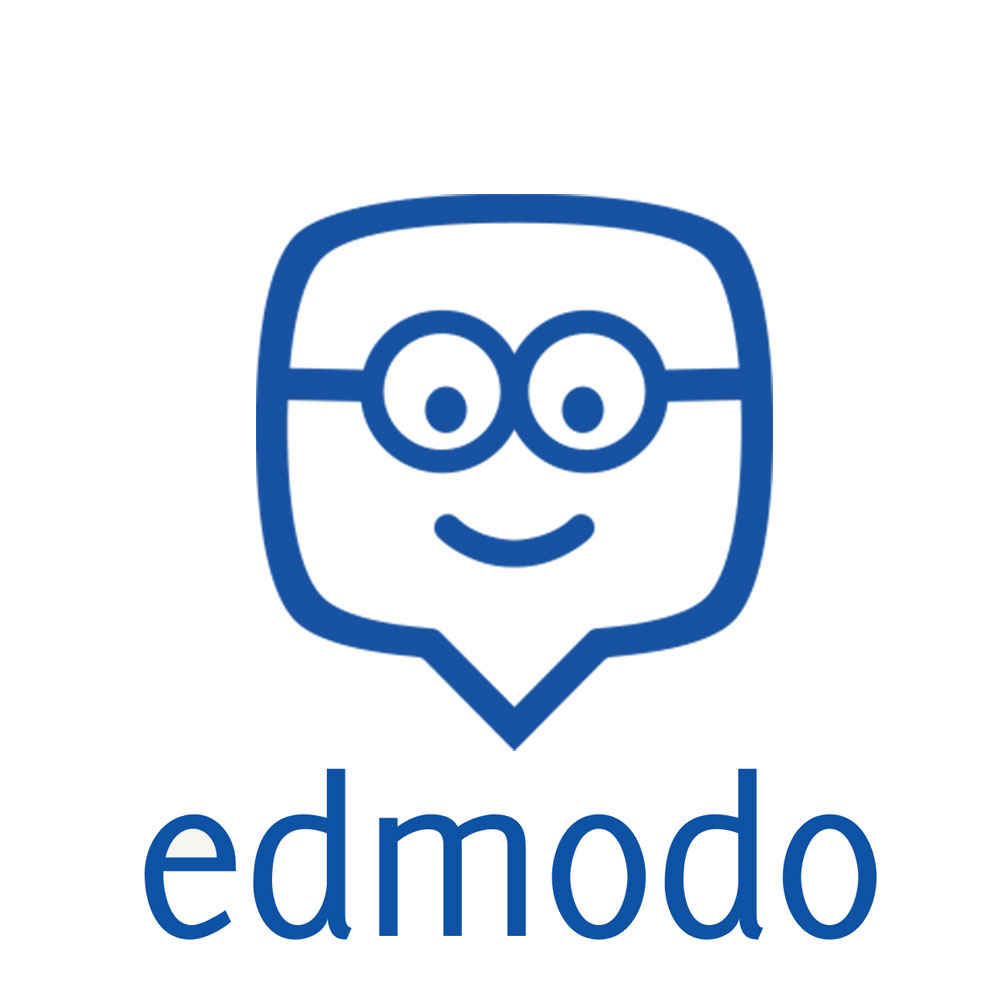

Edmodo, una plataforma educativa gratuita en español que permite crear ambientes educativos virtuales, tiene algunas ventajas, entre ellas:
- Gamificación: A través de las insignias, que son creadas por el profesor y otorgadas a los alumnos.
- Seguridad: Los datos que se muestran en la plataforma son confidenciales.
- Mejora la interacción con el alumno: Al estar constituido en forma de red social, los estudiantes están más predispuestos a aprender.
- Mide el progreso: Facilita la monitorización del estudiante para poder medir su progreso, cualquier documento, distintivo o calificación que se mandan a través de la plataforma se guardan para poder consultarlos cuando se desee.
- Personalización: Los profesores podrán ampliar temario o añadir documentos.
- Gratuito: Edmodo es un servicio sin costo.
- Compatibilidad: Compatible con varios sistemas operativos (Windows, Mac OS, iOS, Android.
Edmodo tiene tres roles: profesores, que son los encargados de crear grupos y administrarlos, estudiantes, que pueden unirse a los grupos siempre que conozcan el código de acceso y los padres, que podrán acceder a la plataforma y a los datos de sus hijos si tienen el código para familiares de los alumnos [1].
A continuación se muestra un videotutorial de la herramienta: